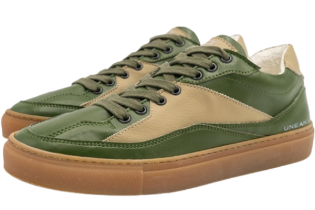
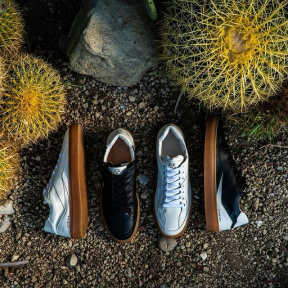
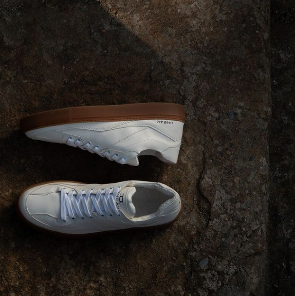

Sneakers which will change your
next step making it more sustainable,
animal friendly, conscious


We realize quite well that shoes
are one of the most consumed products
within the industry of fashion,
which means volumes can be important,
which is a big social responsibility.
Juarez is the name of the first
sustainable sneaker shoes
model from UNEAK,
a new italian sustainable
fashion brand, born from
the ideas of Sonia and Davide.

The Juarez sneaker
model features certified
sustainable materials
It’s produced completely in Italy,
in a warm region where all workers live
very close to the production site.